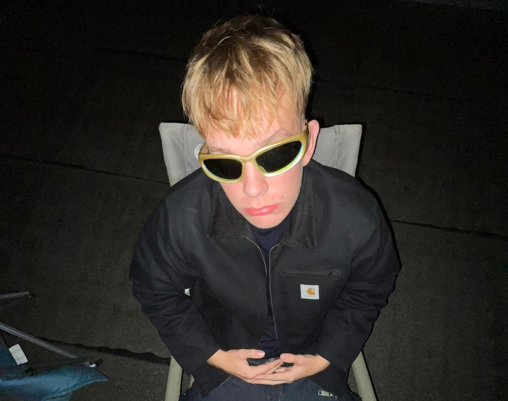

Hallo,
willkommen auf meinem Portfolio, wo ihr die Ehre habt mich kennen lernen zukönnen.
Über mich
Grunddaten:
- Name: Tillmann Justus Welge
- Geboren: 09.02.2008
- Wohnort: Trittau
- Familie:
Persönlichkeit:
- humorvoll
- geduldig
- neugierig
- flexibel
- ehrlich
Interessen
Musik:
- Lieblingsgenre: Rock (sämtlicher Art),
- Lieblingskünstler/Bands: Oasis, Motionless in white, the Cure
- Lieblingslieder:
Hobbys/ Freizeit:
- Sport: Tennis
-
Freizeitaktivitäten: viel mit Freunden, Musik hören, wandern, Reisen
Medien
- Lieblingsfilm: beautiful Boy, Star Wars 3
- Lieblingsserie: Stromberg
Stärken/ Schwächen
Stärken:
- sehr guten Orientierungssinn
- schnelle Auffassungsgabe
- gutes Erinnerungsvermögen
Schwächen:
- Launenhaftigkeit
-
mangelnes oder gar kein Engagement bei uninteressanten Aktivitäten
Zitat:
"Nicht den Tod sollte man fürchten, sondern dass man nie beginnen wird zu leben"
prägende Momente
- Auslandsjahr in Amerika
- Umzug in andere Stadt
- Schulwechsel
wichtigeten Menschen in meinem Leben
- beiden besten Freunde
- meine Eltern
- beste Freundin
Lieblingssachen
- Lieblingstier: Faultier
- Lieblingsfarbe: grün
- Lieblingsort: Berge
- Lieblingsjahreszeit: Frühling
- Lieblingsessen: Falafel